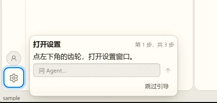
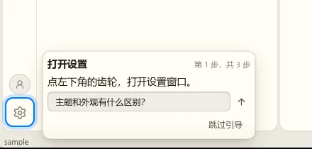
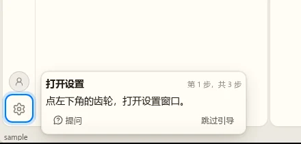
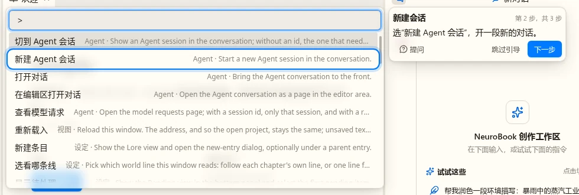
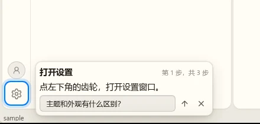
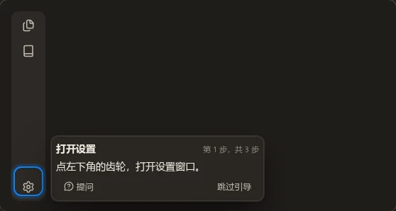
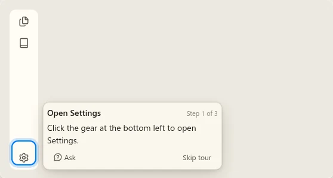
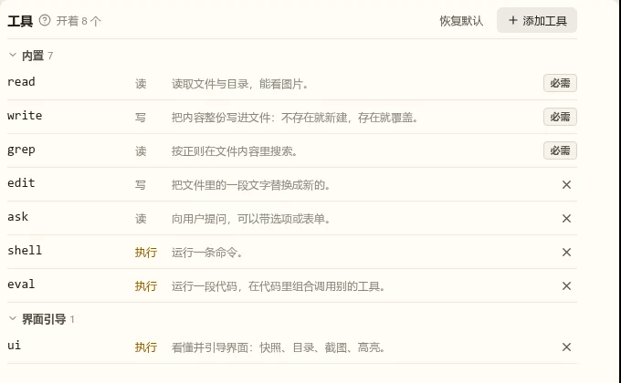
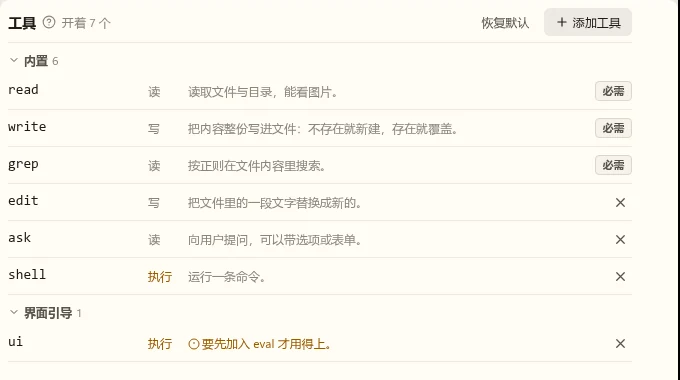

第 1 轮：引导的说明框与 Profile 的 ui 一行
说明框里的提问框一直显示，还是平时收成“提问”按钮？
推荐 B 收起：每一步少一行，点开后输入框换掉按钮那一行，说明框高度不变，不会盖住更多页面。
A 一直显示


想问随时能打字；每一步都多一行。
B 收成“提问”



要多点一下才能问；说明框更短。
说明框、描边与 Profile 的 ui 一行按这一稿实现？
推荐同意：外框、颜色与按钮都取现有的气泡与按钮，暗色与英文都放得下。




直接定，不用答
| 哪里 | 定成什么 |
|---|---|
| 描边 | 强调色 2px，离目标 3px，外加一圈淡晕；出现时轻轻收一下就停，不一直闪；减弱动效时直接出现 |
| 很小、很大的目标 | 小于 28px 的按 28px 画框；整个面板这种大目标改成框在里面 2px、不加晕 |
| 说明框 | 宽 300px，没有箭头，靠描边与间隙指向目标；“跳过引导”是不显眼的文字按钮，“下一步”是主按钮；最后一步“下一步”写“完成” |
| 进度 | “第 1 步，共 3 步”“Step 1 of 3”，只在给了步数时出现 |
| 提问 | 回车发出，Esc 收起并回到原来的焦点；输入法正在组字时回车不发 |
| 目标滚出视野 | 描边先藏起来，说明框停在滚动区里离目标最近的那条边上，仍能跳过或提问；滚回来两者回到目标旁 |
| Profile 的 ui 一行 | 等级只写最高的“执行”（“读、执行”放不下这一列），悬停的说明里列出四个方法各自的档；仍算进“开着 N 个” |
| Profile 里没有 eval | ui 这一行照样在，说明换成“要先加入 eval 才用得上”并带警示图标，与页面上别的字段问题一样 |
已定
- 说明框里有标题、说明、进度、“下一步”（要按下一步的步骤）、“跳过引导”与提问（t01 决定 15、16）
- 不压暗页面、不改页面元素的样式、点说明框不抢焦点；能出现在命令面板、下拉与对话框里（t01 设计稿）
- ui 在 Profile 页显示成一行，可以去掉、加回（t01 决定 14）